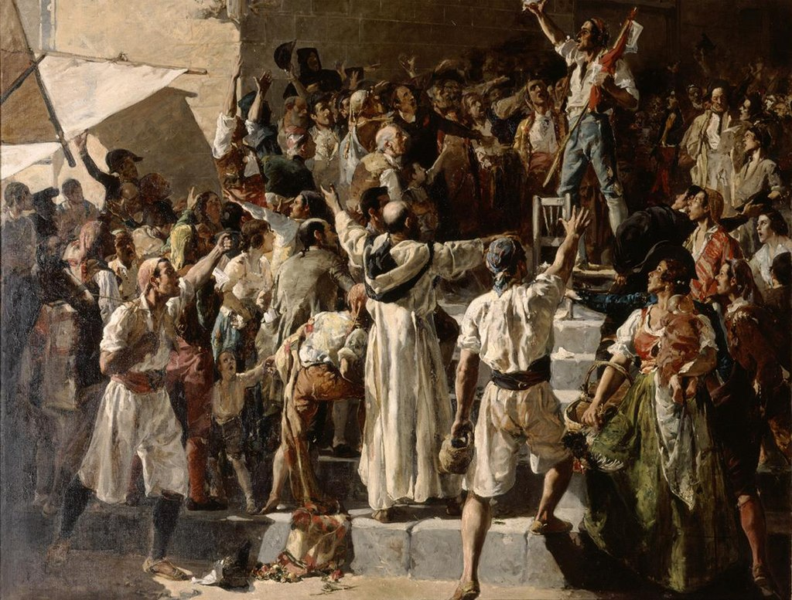
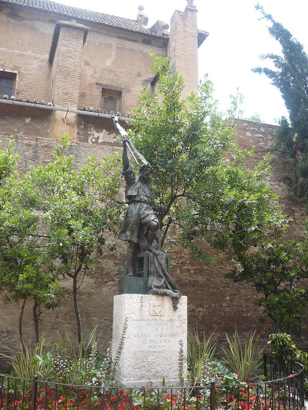
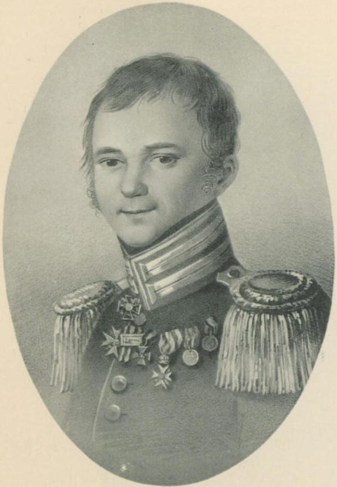
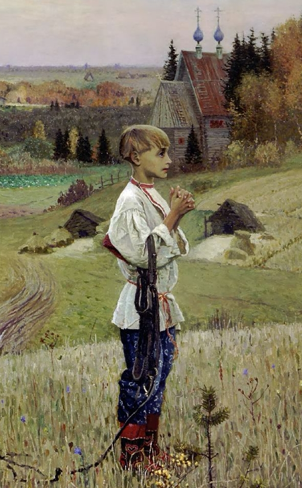
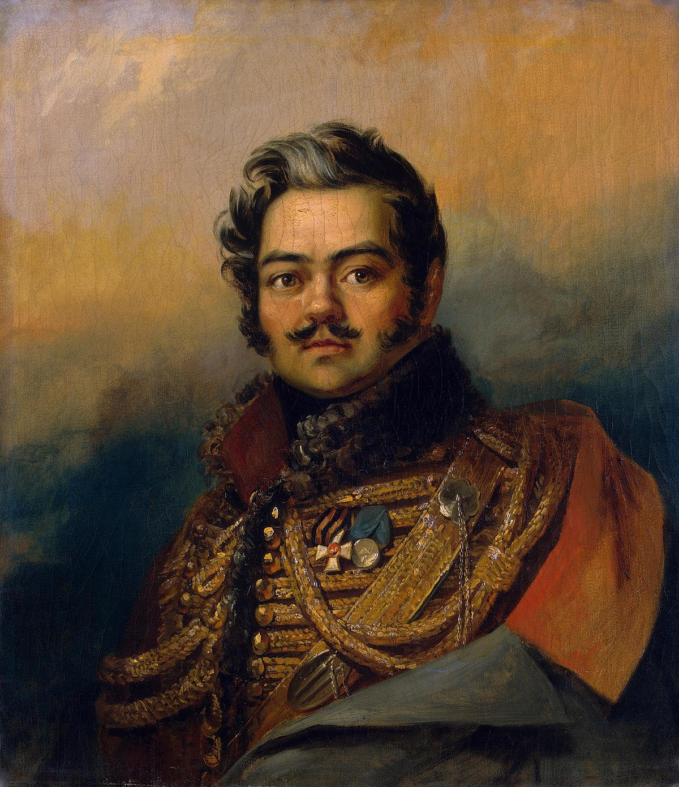
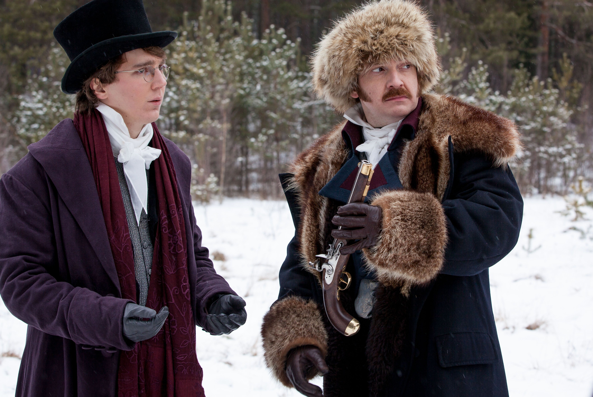
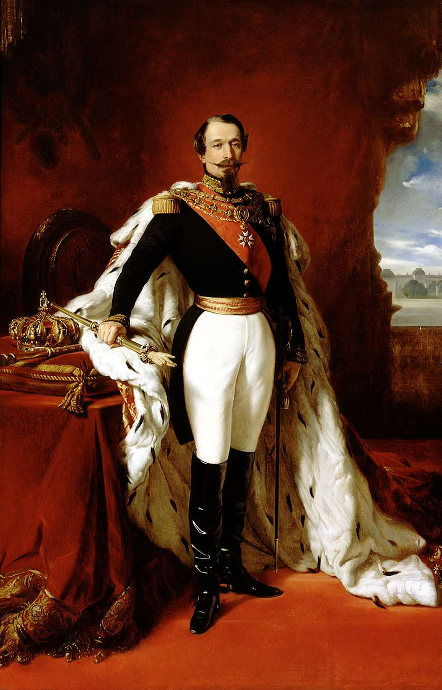

농노를 위한 나라는 없다 - 1812년 프랑스군 후방에서의 게릴라전
게시: 2021-02-15T06:30:48+09:00
몽골 침공 이래 가장 중대한 국난인 나폴레옹의 침공을 맞은 이후, 농노들을 자체 무장시켜 전쟁에 활용하는 것에 대해서는 러시아 지배층 사이에서 논쟁이 꽤 많았습니다. 성스러운 러시아 수호를 위해 당연히 농노들도 목숨을 걸고 싸울 것이며 그들에게 필요한 것은 단지 지도자 뿐이니 귀족인 장원주들이 앞장 서서 농노들을 이끌어야 한다는 낭만파도 있었습니다. 나폴레옹 침공이 시작되기 훨씬 전부터 러시아 귀족들은 모두 스페인에서 스페인 민중이 얼마나 열성적으로 부르봉 왕가를 지지하며 프랑스 침략자들에 맞서 격렬한 투쟁을 벌이고 있는지 잘 알고 있었습니다. 1809년 오스트리아 주동으로 제5차 대불동맹전쟁이 벌어졌던 원인도 스페인에서 프랑스가 고전하는 것을 보고 합스부르크 왕가가 자신감을 얻은 것이 컸지요. 러시아 귀족들 중에는 순박한 농노들이 짜르와 러시아 정교를 위해 목숨을 바쳐 싸울 것이라고 생각하는 사람들이 꽤 있었습니다. 물론 러시아 정규군을 구성하는 병사들은 모두 이미 농노 출신이었습니다. 이 낭만파 귀족들이 생각하는 농노의 전쟁 활용은 프랑스군에게 이미 넘어간 후방 지역에서의 게릴라 활동을 뜻하는 것이었습니다. 스페인 농민들의 활약도 주로 그런 게릴라 전투에서 벌어졌다는 것을 러시아에서도 잘 알고 있었습니다.

(1808년, 프랑스의 몽세 원수가 스페인 남부 도시 발렌시아(Vallencia)를 공격했으나 발렌시아 시민들의 거센 저항에 부딪혀 마드리드로 철수해야 했습니다. 그떄 사건을 그린 Joaquín Sorolla의 "El Grito de Palleter", 즉 "땔감 장수의 외침"입니다. Pallet이라는 것은 우리가 아는 팰릿인데, 여기서는 불을 피우기 위한 나무조각, 즉 땔감을 말하는 것입니다. 당시 프랑스군의 침공이 시작되자, 땔감 장수인 Vicente Domènech가 장터 사람들에게 일장 연설을 하며 프랑스군에 맞서 싸우자고 호소한 것이 발렌시아 시민들의 봉기로 이어졌습니다.)

(위의 그림 뿐만 아니라 발렌시아에는 이렇게 비센테 도메넥의 동상도 있습니다. ) 그러나 농노들 손에 무기를 쥐어주었다가 농노들이 그 무기 끝을 주인에게 돌리면 어떻게 할 거냐는 논리파의 우려도 상당했습니다. 생각해보면 스페인 농민들은 자유인이었으나 러시아 농노들은 사실상 노예 처지였습니다. 노예 해방 이전 미국 남부에서 가령 멕시코와 전쟁이 벌어져 멕시코군이 루이지애나를 침공한다면, 목화밭에서 강제 노동에 시달리던 흑인 노예들이 자신들을 채찍질하던 백인 농장주들을 위해 목숨을 버려가며 싸우기를 기대할 수 있었을까요? 귀족들 대부분은 '거칠고 무식한 농노들은 믿을 수 없다'라고 생각했습니다. 어차피 러시아 귀족들 중에 농노들도 자신들처럼 같은 러시아 민족이며 같은 사람이라고 생각하는 사람들도 거의 없었습니다. 당시 젊은 장교였던 시인이자 작가인 표도르 글린카(Fyodor Nikolaevich Glinka)는 당시 상황에 대해 이렇게 한탄했습니다. "하지만 국민 전쟁이라는 것은 당시 우리들에게는 너무나 생소한 개념이었다. 귀족들은 농노들의 손발을 속박에서 풀어놓는 것을 아직 두려워하고 있었다."

(표도르 글린카입니다. 그는 당시 26세의 젊은이였고, 원래 17세의 나이로 장교에 임관하고 제3차 대불동맹전쟁에도 참전했습니다. 그러나 군 생활에 별 재미를 느끼지 못해 곧 퇴역하고 문학에 몰두했다가 1812년 전쟁을 맞이하여 재입대했었습니다. 그는 94세라는 당시로서는 놀라운 장수생활을 즐기고 1880년에 죽었습니다.) 농노들을 거느리고 장원에 있던 몇몇 귀족들은 실제로 농노들을 이끌고 프랑스군을 공격하기도 했습니다. 그러나 역시 결과는 신통치 않았습니다. 한 귀족은 휘하 농노들을 쇠스랑과 큰 낫, 도끼 등으로 무장시키고 일장 연설을 한 뒤 비장하게 외젠 휘하의 이탈리아군 소부대를 공격하러 나섰는데, 정작 적군을 발견하고 함성과 함께 앞장 서서 말을 달리다 보니 휘하 농노들은 모두 줄행랑을 친 것을 보고 아연실색해야 했습니다. 이렇게 비정규 게릴라 뿐만 아니라, 정식 민병대에 징집된 농노들도 툭하면 스스로의 몸에 상처를 내고는 전선에서 빠져나가려고 했습니다. 당연했습니다. 왜 귀족들의 전쟁에 지킬 것 하나 없는 노예들이 피를 흘리겠습니까? 후방에서 농노들을 규합하여 게릴라 전쟁을 벌여 프랑스군의 후방을 끊어놓겠다는 계획을 가진 사람 중 가장 유명한 인물은 다비도프(Denis Vasilyevich Davydov)라는 시인 겸 군인이었습니다. 전쟁 발발 당시 바그라티온의 제2군에 소속된 28세의 젊은 경기병 장교였던 그는, 약간의 병사들만 주면 후방에서 농노들을 봉기시켜 스페인에서처럼 게릴라 전쟁으로 나폴레옹을 괴롭히겠다고 상관들을 계속 졸랐습니다. 말도 안되는 이야기라고 치부하며 거부하던 상관들은 거듭되는 후퇴 속에 절망한 나머지, 9월초 보로디노 전투 직전에 비로소 그 요청을 허가했습니다. 이렇게 50명의 정규 기병과 80명의 코삭 기병들의 지휘관이 되어 프랑스군 점령 지역으로 들어간 다비도프는 처음에는 대단한 희망과 기대를 안고 농노들만 남은 러시아 마을로 들어갔습니다. 그러나 러시아 군복을 입고 러시아 말을 외치는 그의 부대에게 날아든 것은 농노들이 쏘아대는 총탄이었습니다. 농노들에겐 러시아군이든 프랑스군이든 자신들을 약탈하는 불한당이라는 점은 똑같았던 것입니다. 덕분에 다비도프는 러시아 농노들의 환심을 사고 신뢰를 얻는데 한참 동안의 시간과 노력을 써야 했습니다. 그와 그의 부대는 화려한 러시아 군복 대신 농노들의 작업복을 입고 농노들처럼 길게 수염을 기르는 등의 노력을 한 뒤에야 총에 맞지 않고 농노 마을에 접근할 수 있었습니다.

(농노들의 전통적인 작업복인 코소보롯카 Kosovorotka, косоворо́тка 입니다. 영화나 그림, 소설의 영향으로 지바고 셔츠, 톨스토이 셔츠라고도 합니다.) 그러나 그런 뒤에도 그의 게릴라 활동은 그렇게까지 큰 성과를 내지는 못했습니다. 9월 하순 경에는 그의 부대는 이미 3천명의 기병으로 늘어났고 10월이 되자 규모가 더 커졌지만 대부분은 농노가 아니라 낙오병과 탈출한 포로들이었습니다. 다비도프도 이들을 이끌고 대담한 공격을 펼치지는 않았고 그냥 프랑스군 호송대나 먹을 것을 구하러 나온 소규모 징발대를 습격하는 정도였습니다. 이들이 이렇게 소극적인 활동을 한 것은 아무래도 결국 농노들의 게릴라 전투 참여도가 떨어졌기 때문이었습니다. 농노들이 이런 소규모 습격 작전에 참전하는 경우도 꽤 많긴 했으나 이들은 프랑스군 호송대의 물품을 약탈하는데 관심이 있거나 자신의 마을 근처로 노략질을 나선 프랑스군으로부터 마을을 지키기 위한 것 뿐이었고 조국 러시아를 구한다는 거창한 애국심 따위는 없었기 때문에, 그런 소규모 작전이 끝나면 그날 밤에 당장 흩어져 버렸습니다.

(다비도프의 초상화입니다. 그는 나중에 러시아-페르시아 전쟁에서도 활약했고 54세의 나이로 죽었습니다.) 하지만 다비도프는 훗날 대단한 명성을 얻습니다. 러시아의 대문호 푸쉬킨도 그를 영웅으로 떠받들었고 아이반호를 쓴 영국의 귀족 작가인 월터 스캇 경은 서재에 다비도프의 초상화를 걸어놓을 정도로 그의 이야기를 좋아했습니다. 이유는 일단 다비도프 자신이 시인으로서 보드카와 게릴라 전투와 모닥불과 우정 등에 대한 이야기로 버무려진 일련의 책들을 냈기 때문이었고, 그의 이야기가 진짜 대문호인 톨스토이의 장편 소설 '전쟁과 평화'에서 후방 게릴라 작전을 펼친 기병 장교 데니소프(Vasily "Vaska" Denisov)라는 인물에 투영되었기 때문이기도 했습니다. 게다가 소련 시절에는 소위 '민중의 힘'을 강조하느라 역사학자들이 별로 신빙성 없는 과장된 무용담을 사실로 받아들이고 책을 냈기 때문이라고도 합니다. 가령 어떤 전투에서는 이런 농노 부대가 무려 124명의 프랑스군을 죽이고 101명을 포로로 잡는데 농노들의 사상자는 부상자 2명과 말 6마리가 죽거나 다친 것 뿐이라고 하는데, 믿기 어려운 이야기입니다. 훗날 데카브리스트가 되는 강직한 귀족 세르게이 볼콘스키 대공은 그런 이야기는 모두 터무니없는 이야기에 불과하다고 평가했고, 또 현대의 러시아 역사학자들의 연구에서도 현실적으로 1812년 전쟁 기간 중 농노들의 게릴라전 참여는 저조했고 스페인에서의 게릴라전과 비교할 수준은 아니라고 평가했습니다.

(BBC 드라마 '전쟁과 평화'에서의 한 장면입니다. 왼쪽이 피에르, 오른쪽이 데니소프입니다. 삐에르의 결투 장면인가 보군요.) 농노들은 프랑스군에 대해서 처음에는 오히려 우호적이었습니다. 뭐니뭐니해도 자신들을 착취하는 귀족 농장주들을 쫓아낸 고마운 사람들이었으니까요. 폴란드인들을 앞세워 돈을 내고 먹을 것을 사러 온 프랑스군에 대해서 농노들은 꽤 협조적으로 대했습니다. 귀족들과는 달리 프랑스어를 못해 의사 소통이 잘 되지는 않았지만 자신들의 딱한 처지에 대해 뭔가 한참 하소연을 하기도 했고 프랑스군이 자신들을 위해 어떤 변화를 일으켜 주기를 바라는 눈치였습니다. 그러나 이런 농노들도 결국은 프랑스군에 대해 적대적으로 변했고 위에서 언급했듯이 기회가 생기면 프랑스군 호송대나 징발대를 습격하기도 했습니다. 이유는 모두 프랑스군이 자초한 것이었습니다. 예르몰로프(Aleksey Petrovich Yermolov) 장군에 따르면 국가적 차원에서 농노를 짜르 편으로 돌릴 방법은 사실상 없었는데, 그걸 해낸 것이 바로 프랑스군의 서툴고 규율 없는 약탈 행위였습니다. 원래 프랑스군이 보급품을 현지 조달에 의존한다고는 하지만, 프랑스군의 병참 조직은 무척 숙련되어 그런 징발 활동은 현지 주민들과의 마찰을 최소화하면서도 무척 효율적으로 잘 굴러갔습니다. 러시아 원정에서도 적어도 초기에는 많은 곳에서 프랑스군은 돈을 내고 먹을 것을 사려고 했습니다. 그러나 무리하게 급조된 다국적군인 그랑다르메의 병참 조직은 원래 프랑스군의 숙련되고 효율적인 병참 조직에 비해 꽤 엉망이었고 또 황량한 러시아에서는 원래의 프랑스군 병참 장교들도 어찌할 바를 몰랐습니다. 모스크바를 점령한 이후엔 식량 사정이 대폭 나아졌으나, 오히려 그 이후에는 한몫 챙기겠다는 개인적이고 금전적인 욕심에 규율없는 약탈 행위가 심해졌습니다. 특히 모스크바 대화재라는 무질서와 파괴의 아비규환이 벌어지면서 장군부터 사병들까지 모두 부끄러운 줄도 모르고 귀중품 약탈에 나선 이후에는 그런 돈벌이 약탈이 더욱 심해졌습니다. 그런 약탈은 현지 주민들과의 마찰을 격화시킬 수 밖에 없었습니다. 게다가 종교도 또 한몫 했습니다. 러시아 농노들은 모두 러시아 정교를 믿었고 카톨릭에 대해서는 반감을 가지고 있었는데, 러시아군에서는 카톨릭 교도들인 프랑스군이 쳐들어와서 사람들을 모조리 카톨릭으로 강제 개종시킨다는 헛소문을 퍼뜨렸습니다. 그리고 프랑스군은 러시아 정교의 성당을 파괴하고 마굿간으로 쓴다는 소문도 퍼졌습니다. 이건 일부 사실이었습니다. 프랑스 대혁명 때도 파리 시내의 성당들을 일부러 마굿간으로 사용한 적이 있었고, 러시아를 침공한 프랑스군이 러시아 정교 성당에서 말을 재운 것도 사실이었습니다. 그러나 이는 버젓한 건물이라고는 성당 밖에 없는 상황에서 어쩔 수 없는 일이기도 했습니다. 사람도 노숙을 하는 마당에 말을 건물 안에서 재운다는 것이 이해가 안 갈 수도 있으나, 당시 기병대에서는 소중한 말들을 가능한 한 건물 안에서 재웠습니다. 그러나 러시아 농노들에게는 악마 같은 프랑스놈들이 러시아 정교를 박해한다는 인상을 주기에 충분한 일들이었습니다. 이 모든 일은 사실상 나폴레옹의 책임이었습니다. 나폴레옹이 마음만 먹었다면 얼마든지 러시아 농노들을 자신의 편으로 끌어들일 수 있었을 것입니다. 대표적인 것이 농노 해방령의 선포였습니다. 아무리 러시아 농노들이 배운 것 없고 거칠다고 해도, 농노 해방의 의미를 모를 수는 없었습니다. 당시 러시아 농노들은 땅에 예속된 존재로서 농장과 함께 매매되는 자산 취급을 받았습니다. 또한 주인이 농노를 살해할 경우 약간의 벌금을 낼 뿐이었으므로 말 안 듣는 농노는 언제든 주인 손에 죽을 수도 있었습니다. 그런 비인간적인 처우에서 벗어나는 것을 달갑게 생각하지 않을 사람은 없습니다. 그런데 왜 나폴레옹은 러시아를 근본적으로 뒤집어 놓을 조치를 하지 않았을까요? 이건 나폴레옹의 정치적 한계성 때문이었습니다. 나폴레옹은 프랑스 대혁명 이후 프랑스 국민의 대중적 지지를 받아 등극한 황제였습니다. 그래서 그냥 왕좌를 선대로부터 당연스럽다는 듯이 물려받은 부르봉 가문의 왕들이 le Roi de France (프랑스의 왕)이라고 칭호를 정한 것과는 달리 스스로의 칭호를 Empereur des Français (프랑스 국민들의 황제)라고 할 정도로 차별성을 두었습니다. 그렇다고 나폴레옹이 뭐 대단한 인권 운동가는 아니었고 가난한 민중을 위한 정치가는 더더욱 아니었습니다. 그는 항상 배운 것 없고 가진 것 없는 농민 및 도시 노동자들을 무시했으며 그의 모든 정책은 중산층 시민, 즉 부르조아 계급을 우대하는 것이었습니다. 무엇보다, 나폴레옹 자신이 바로 그렇게 실력으로 자수성가한 부르조아였습니다. 그는 원래 코르시카의 몰락한 귀족이었지만 어설프게 코르시카 독립 운동에 나섰다가 모든 것을 잃은 뒤 오로지 자신의 실력만으로 그 자리에 오른, 전형적인 엘리트 실력파였습니다. 그렇게 스스로 뛰어난 실력을 가진 엘리트는 배운 것 없고 가진 것 없는 사람들을 깔보기 쉬운 법입니다.

(Empereur des Français 라는 호칭은 나중에 나폴레옹의 조카이자 오르탕스의 아들인 나폴레옹 3세가 다시 사용합니다. 단, 그는 나폴레옹의 핏줄만 이어받았을 뿐 그의 실력은 전혀 물려받지 못했기 때문에 프랑스에게 영광 대신 온갖 개망신을 남겨주고 떠났습니다. 국가이건 기업이건 대를 이어 물려받는다는 것이 그렇게 해롭습니다.)
계몽사상이 퍼져있고 상공업이 발달하기 시작했던 프랑스와 독일, 스위스와 이탈리아 등지에서는 그의 그런 정치적 자세가 통했습니다. 당시 유럽 사회를 견인하는 세력이었던 각국의 시민 계급은 자신들의 이익을 대변해주는, 혹은 그럴 것이라고 기대되는 나폴레옹에게 열광했습니다. 그러나 러시아에서는 아니었습니다. 러시아에는 그를 지지해줄 시민 계급은 없었습니다. 나폴레옹도 그걸 잘 알고 있었습니다. 나폴레옹은 러시아에서 농민 혁명을 이끌 생각은 전혀 없었고 그가 이 전쟁을 시작한 이유는 딱 하나, 짜르 알렉산드르를 잘 구슬러 자신의 말을 다시 잘 듣게 만드는 것 뿐이었습니다. 러시아 농노들이 죽건 말건 나폴레옹은 아무런 관심이 없었습니다. 만약 그가 농노들에게 볼온한 사상을 불어넣어 알렉산드르의 황권이 무너질 경우 협상의 대상이 없어지는 결과가 나올 뿐이었으므로, 나폴레옹은 오히려 그런 대규모 농노 봉기를 두려워 했습니다. 결국 나폴레옹의 러시아 원정은 처음부터 실패할 운명이었습니다. 전에도 언급했다시피 그런 규모의 보급선을 유지할 기술적 역량도, 현지인들의 마음을 얻을 정치적 역량도 그에게는 없었기 때문이었습니다. Source : 1812 Napoleon's Fatal March on Moscow by Adam Zamoyski
en.m.wikipedia.org/wiki/Fyodor_Glinka
en.wikipedia.org/wiki/Battle_of_Valencia_(1808)
es.wikipedia.org/wiki/Vicente_Dom%C3%A9nech
en.wikipedia.org/wiki/Denis_Davydov
en.wikipedia.org/wiki/Kosovorotka